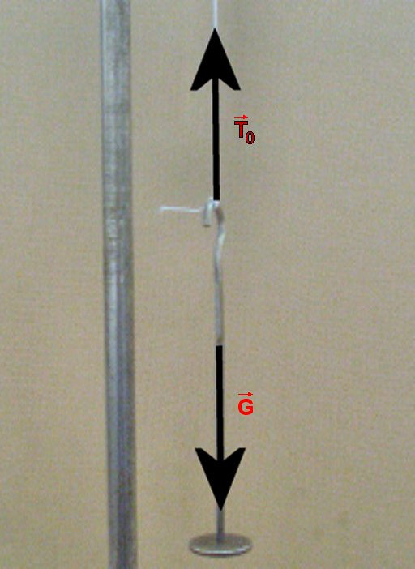

Echilibrul şi energia potenţială

Fig. 1
Sistemul este în echilibru.
Fig. 2
Oricare abatere de la starea cu acelaşi nivel peste tot conduce la stări cu mai multă energie potenţială!
«
Varianta interactivă
 « Varianta interactivă
« Varianta interactivă